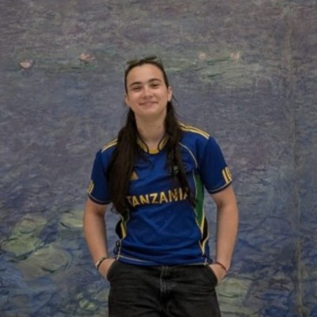
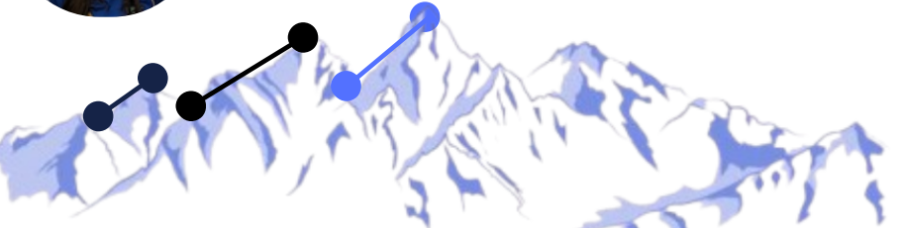
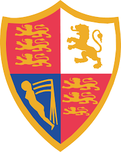
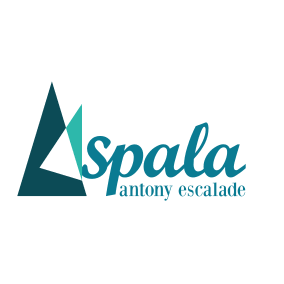
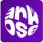
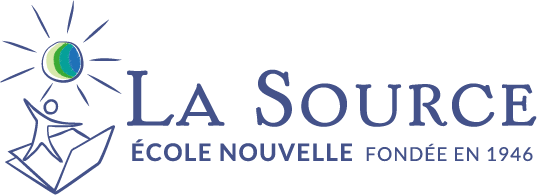
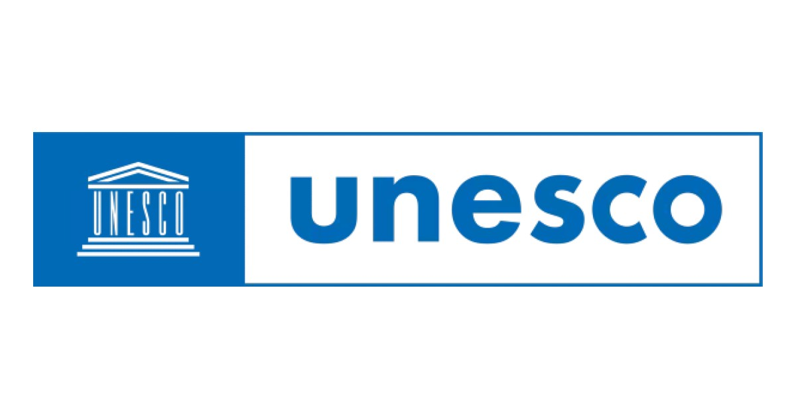
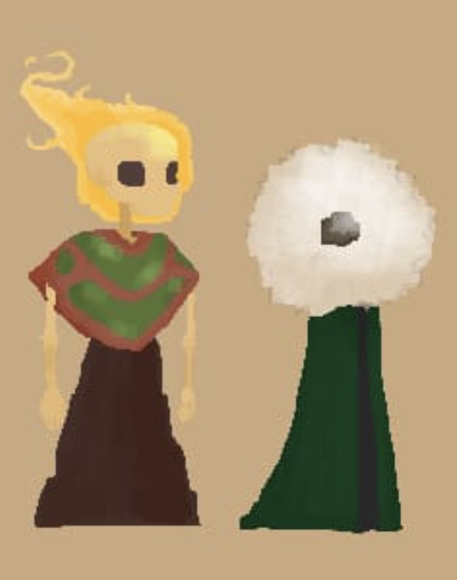
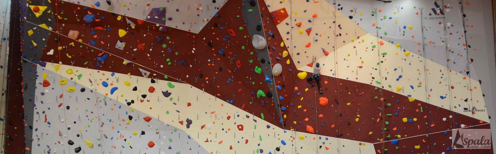
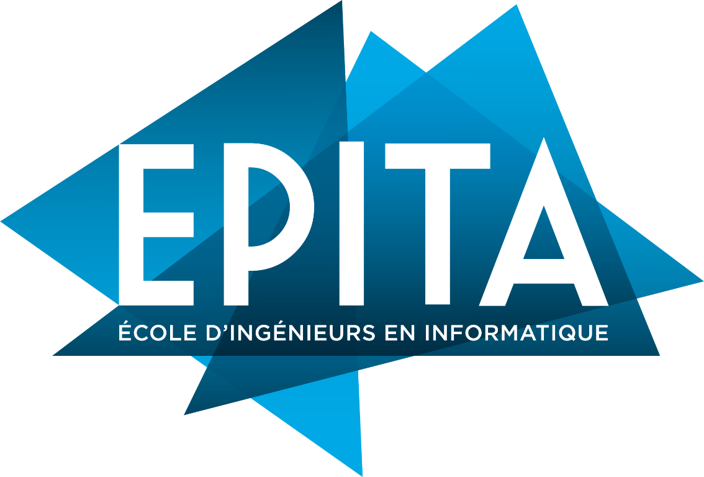

La Source Middle & High School, Meudon (2019–2025)
- French Baccalauréat with Honors
- National Brevet Diploma with High Honors
- Specializations: Mathematics, Physics-Chemistry, Computer Science
- Advanced Mathematics option

I'm a 19-year-old second-year student at EPITA, a French engineering school specializing in computer science. I love learning how things work, solving problems, and turning ideas into projects.
A little about me
I'm a second-year computer engineering student at EPITA, curious about how things work and how ideas become real projects. Technology, sports, and teamwork keep me learning, building, and looking for new challenges.

Work and internships

Part-time position · July 2026–Present
A part-time position alongside engineering studies, with a focus on developing professional responsibility and interpersonal skills.

Volunteer coach · September 2024–Present
Since September 2024, weekly sessions for 20 adult beginners have covered essential safety procedures and climbing fundamentals, with guidance adapted to each participant.
Observation internship · July 2022 · 1 month
Laboratoire Interdisciplinaire des Sciences du Numérique
During a placement with a combinatorics researcher at Université Paris-Saclay and CNRS, Python programming and discussions with doctoral students offered an introduction to mathematical research and scientific rigor.
Observation internship · July 2022 · 1 month
The placement included shadowing a journalist and attending an interview, providing first-hand insight into reporting and current affairs.

Observation internship · July 2021 · 1 month
Responsibilities at the Massy climbing gym included café service, climbing-product sales, and contributing to new bouldering routes—building versatility and creativity.
Observation internship · April 2021 · 1 month
A pastry internship introducing the precision, discipline, and high standards of a Michelin-starred kitchen.
Community & initiative

The middle-school Agenda 21 workshop developed a chicken coop to repurpose cafeteria leftovers. Featured in Image Doc (issue 371), the project continues to benefit the school, where the chickens still live.

The high-school UNESCO workshop has organized fundraisers for Imagine for Margo and Edenia, awareness activities about disposable e-cigarettes, and preparations for a Run Against Hunger.
Selected project
First-year team project · Python · Game development
As part of my first-year project, I collaborated with four other students to design and develop Queen Amann, a 2D platform game created from concept to completion. Set in a pastry-themed world, the game follows an adventure to gather ingredients and save Queen Amann.
We worked across the full game development process, including game design, programming, asset integration, testing, and team coordination. Building a complete playable game gave me hands-on experience and strengthened my skills in:

What I bring
LanguagesFrench (native) · English (C1, TOEFL)
Driving licenceCategory B
Outside interests

Six years of climbing and six hours of weekly training have led to departmental and regional titles in bouldering and lead, regional-team selection, French youth-team trials, and a top-25 finish at the French Championships. The sport continues to develop persistence and resilience.

I'm drawn to programming, mathematical problem-solving, and challenging projects. Experiences in California and Germany have also sparked my interest in other cultures and international environments.
International experience
Exchange student · February–March 2022
A month-long exchange in Palo Alto, living with a German-American host family and attending Silicon Valley International School, strengthened English skills and intercultural understanding. Visits to Google’s offices and Stanford offered a glimpse into Silicon Valley’s innovative and academic culture. The experience led to a return visit the following year and several trips to Germany to reconnect with friends.
Looking ahead
I want to become an engineer who develops innovative, meaningful technology. At EPITA, I'm working to strengthen my programming skills, deepen my understanding of computer science, and gain practical experience through challenging projects.
I'm eager to explore different fields, learn from experienced professionals, and discover where I can make the greatest impact. In the long term, I hope to contribute to meaningful projects in a stimulating, collaborative, and international environment.